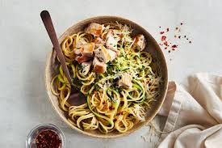

Garlic Butter Noodles

Description
This delicious one-pot pasta dish is a godsend for busy evenings when you crave a satisfying meal without the hassle of cooking and cleanup. In a single pot, you sauté garlic until golden and aromatic, then add the chicken broth, milk, and fettuccine and let the magic happen. As the pasta simmers, it soaks up the flavors of the garlicky broth, making it super tasty. Once the pasta is tender, generous handfuls of grated Parmesan cheese are stirred into the dish, adding a luxurious touch. It's a mouthwatering combination of flavors and textures that kids and adults adore, making it a surefire hit at the dinner table.
Ingredients
- 2 tablespoons unsalted butter
- 4 cloves garlic
- 2 cups chicken broth
- 1 cup milk
- 8 oz fettuccine
- salt
- pepper
- 0.25 grated parmesan
- 2 tablespoons fresh parsley, chopped
Steps
- Heat unsalted butter in a large skillet over medium high heat. Add garlic and cook, stirring frequently, until fragrant, about 1-2 minutes.
- Add in the chicken broth, milk, and fettuccine. Season with salt and pepper.
- Bring the pot to a boil, then reduce heat and simmer, stirring occasionally, until pasta is cooked through, about 18-20 minutes.
- Stir in Parmesan. If the mixture is too thick, add more milk as needed until desired consistency is reached.
- Serve immediately, and top with parsley.
- Enjoy!